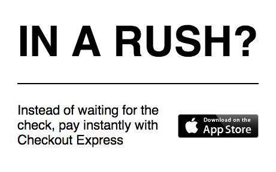
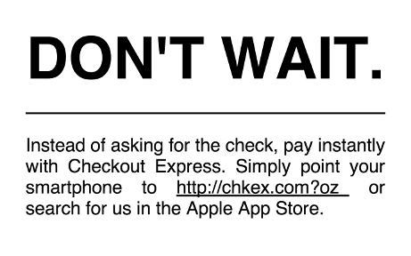
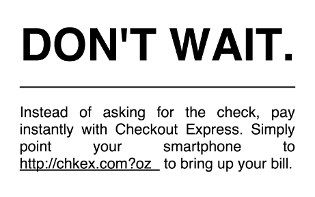
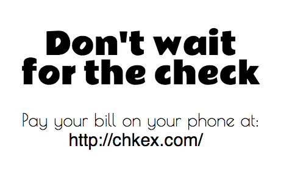

tl;dr We got the equivalent of around 50 uses per week per location
Setup
I ran the experiment at a restaurant called Social at Bakery Square. Bakery Square is essentially a small outdoor mall and office buildings. It is home to both Google's Pittsburgh offices and TechShop Pittsburgh. I picked the location because I believed that there would be a higher concentration of early adopters in that area than most other areas of Pittsburgh.
The exact setup of the experiment changed as the experiment went on, so I will describe the initial setup here and the changes as they occur in the later parts. The app was live at six of Social's 30+ tables. However, I selected the six I believed would be most busy.
On the tables where the app was live, I put a business card advertising the app. The cards looked as follows:  The cards were placed in stands (seen here), 10 cards in each stand, one stand per table.
When a customer made an order, after the waitstaff inputted the order into Social's Point of Sale (POS) system, I would go to a POS terminal and copy down the order from their database to mine. This is because the app did not integrate into the POS system. All the integration was done manually, behind the scenes, by myself.
Days 1-3
Saturday, March 29th, 2 PM - 4 PM
Because people eat so slowly during brunch, and because this was such a short test at an awkward time, and because I was only testing the app at 6 tables, only two groups actually got the chance to use the app. One of those was a group of elderly ladies. The other was a group of three 20-somethings. Neither group used the app. When the group of 20-somethings left I asked if they had seen the cards. They said they had, they just didn't use the app anyway.
Tuesday, April 1st, 11:00 AM - 1:30 PM
Four groups had the chance to use the app, none of whom did. I overheard one person at one table talking about the app, so when he left I asked him about it. He said he was interested but didn't want to download a new app when he wasn't at home.
Based on my interactions up to this point, I decided two things: (1) There needed to be a webapp version available for people to try the app (2) The tag line "In a rush?" isn't very good because most people aren't in a rush. So I redesigned the cards like so:  I filled in the blank space at the end of the URL with a pen. I also made a webapp-only version of the card: 
Wednesday, April 2nd, 5:00 PM - Midnight
I now did the experiment at 8 tables: 6 had the hybrid cards, and 2 had the web-only cards.
When I first entered, I was informed that around 4 PM the man from the day before who was interested came back, said he downloaded the app, and wanted to try it. I was not around to run everything at that point in time, so he couldn't actually do it.
While I was there, 11 groups got a chance to use the app. Of those, only one group, at the very end of service, actually used the app. The person who used it was himself an entrepreneur, and he used the native version (as opposed to the web app).
Thursday, April 2nd
I had a doctor's appointment, and had to spend some time thinking about how to bring up my metrics. So I did not test the app on this day. However, I did redesign the card, which now looks as follows:  At the end of the URL, I wrote in a number which identified the table. As you can see, it is a web only design. I decided that to keep the design simple, I couldn't include both web and native instructions. I decided web was more important for first use, and I could get native users when I emailed someone their receipt.
Day 4 (Friday, April 4th, 11:30 AM - 9:30 PM)
At 5 PM, I actually gave up and left. I was feeling pretty depressed about the results thus far and running the experiment was actually kind of exhausting. But I left the business cards at the table in case But at 8 PM, I saw that two people attempted to use the app. The app was disabled at the time, so they were just shown an error screen, and I wasn't there to ask them about it, but I still found the result encouraging. At 9:30, I went back and removed the cards.
Day 5 (Saturday, April 5th, 6 PM - 8:40 PM)
I realized at this point that the app itself isn't actually important to the experiment. What I was interested in was if I could get someone to try to use the app, not if anyone actually used it. Since logging everything behind the scenes was such a pain, I decided I would disable the app, switch it to just send me a notification, and manually check out any customers who wanted tried to use the app. This would allow me to get some work done, instead of just spending the whole time transferring information from the POS to my database.
4 people tried to use the app. Oddly though, they all tried to use it shortly after they ordered, not at the end of their meal when they were checking out. When I came over to their table, I said that I would be happy to check them out if they reloaded the app at the end of their meal, and asked why they had tried to use it so soon in the first place. They said they were just curious. One person mentioned that he had had this problem in the past so he was particularly interested in a solution.
Most people were pretty angry to learn that the app didn't really work. They were curious more than anything else, and if it wasn't a "real" app they didn't really care. I ended the experiment early because I didn't want the restaurant to receive any complaints.
Conclusion
In the end, 8 people tried to use the app, and one person actually used it. Presumably all 8 of those people would have actually used it if it were functioning the whole time. If we count the total active time for the app as 3 full days at 1/3 of the tables at the restaurant, that means that if we extrapolate around 50 people can be expected to try the app in any week, given the current setup. If you look at the competing metrics, these usage numbers are nearly 2 orders of magnitude above everyone else.
Another major thing I learned is that people are mostly just curious, and the app needs to work with their curiosity. When I am manually passing information from the restaurant's POS system into my database, it takes about five minutes for the information to enter my database (on average), and the payment process still ends with me physically handing a check to the diners. This all really violates the whole purpose of people using the app. It needs to feel automatic. So real POS integration is necessary before further testing. A redesign is also in order, since the current version is ugly.